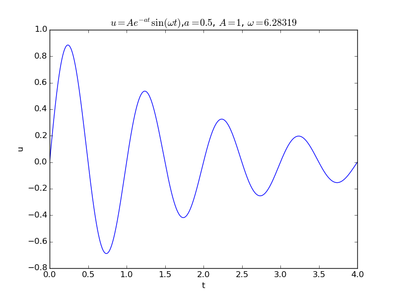

The equations of linear elasticity
Sketch: $$ \begin{equation} \varrho\frac{\partial^2\u}{\partial t^2} = \nabla ((\lambda + \mu)\nabla\cdot\u) + \nabla\cdot(\mu\nabla\u) + \varrho\boldsymbol{f}\tp \end{equation} $$ $$ \begin{equation} \varrho\frac{\partial^2\bar \u}{\partial \bar t^2} = \bar \nabla ((\frac{t_c^2\lambda_c}{\varrho L^2}\bar\lambda + \frac{t_c^2\mu_c}{\varrho L^2}\mu)\bar \nabla\cdot\bar \u) + \frac{t_c^2\mu_c}{\varrho L^2}\bar \nabla\cdot(\bar \mu\bar \nabla\bar \u) + \frac{t_c^2f_c}{u_c}\bar\f\tp \end{equation} $$ $$ t_c = L\sqrt{\frac{\varrho}{\mu_c}}$$ $$ u_c = \frac{\varrho L^2f_c}{\mu_c}$$ $$ \begin{equation} \varrho\frac{\partial^2\bar \u}{\partial \bar t^2} = \bar \nabla ((\alpha\bar\lambda + \bar\mu)\bar \nabla\cdot\bar \u) + \bar \nabla\cdot(\bar \mu\bar \nabla\bar \u) + \f\tp \end{equation} $$ $$ \alpha = \frac{\lambda_c}{\mu_c}\tp$$
(hpl 9: The homogeneous case without body force is common. Scale displacement from boundary condition. Maybe scale traction first and determine characteristic displacement from it?)
(hpl 10: The homogeneous case should be written up, then \( \mu_c=\mu \) and \( \bar\mu = 1 \), etc.)
The Navier-Stokes equations
The momentum equation without body forces
The Navier-Stokes equations for incompressible viscous fluid flow take the form $$ \begin{align} \varrho\left(\frac{\partial \u}{\partial t} + \u\cdot\nabla\u\right) &= -\nabla p + \mu\nabla^2\u, \tag{128}\\ \nabla\cdot\u & = 0\tp \tag{129} \end{align} $$ The primary unknowns are the \( \u \) is the velocity of the fluid and \( p \) is the pressure, while \( \varrho \) is the fluid density, and \( \mu \) is the dynamic viscosity.
We introduce as usual dimensionless independent and dependent variables: $$ \bar x = \frac{x}{L},\quad \bar y = \frac{y}{L},\quad \bar z= \frac{z}{L},\quad \bar t = \frac{t}{t_c},\quad \bar\u = \frac{\u}{u_c},\quad \bar p = \frac{p}{p_c},$$ where \( L \) is some characteristic distance, \( t_c \) is some characteristic time, \( u_c \) is a characteristic velocity, and \( p_c \) is characteristic pressure. Inserted in the equations, $$ \begin{align} \varrho\left(\frac{u_c}{t_c}\frac{\partial \bar\u}{\partial \bar t} + \frac{u_c^2}{L}\bar\u\cdot\bar\nabla\bar\u\right) &= -\frac{p_c}{L}\bar\nabla\bar p + \frac{u_c}{L^2}\mu\bar \nabla^2\bar\u, \tag{130}\\ \frac{u_c}{L}\bar\nabla\cdot\bar\u & = 0\tp \tag{131} \end{align} $$ For the velocity it is common to just introduce some \( U \) for \( u_c \). This \( U \) is normally implied by the problem description. (hpl 11: Show examples of confined and unconfined flow and what \( U \) is.) For example, \( U \) is often chosen as a characteristic inlet velocity in the flow problem. Having a characteristic distance \( L \) and velocity \( U \), an obvious time measure is \( L/U \) so we set \( t_c=L/U \). Dividing by the coefficient in front of the time derivative term, creates a pressure term $$ \frac{p_c}{\varrho U^2}\bar\nabla\bar p\tp$$ The coefficient suggest a choice \( p_c=\varrho U^2 \) if the pressure gradient term is to have the same size as the acceleration terms.
The most common dimensionless form of the Navier-Stokes equations
The discussions so far results in the following dimensionless form of (128) and (129): $$ \begin{align} \frac{\partial \bar\u}{\partial \bar t} + \bar\u\cdot\bar\nabla\bar\u &= -\bar\nabla p + \hbox{Re}^{-1}\nabla^2\u, \tag{132}\\ \bar\nabla\cdot \bar\u &= 0, \end{align} $$ where Re is the famous Reynolds number, $$ \hbox{Re}= \frac{\varrho UL}{\mu} = \frac{UL}{\nu}\tp$$ The latter expression makes use of the kinematic viscosity \( \nu = \mu/\varrho \). For viscous fluid flows without body forces there is hence only one dimensionless number, Re.
The Reynolds number can be interpreted as the ratio of convection and viscosity: $$ \hbox{Re} = \frac{\hbox{convection}}{\hbox{viscosity}} = \frac{\varrho U^2/L}{\mu U/L^2} = \frac{UL}{\nu}\tp$$ (We have here used that \( \nabla\u \) goes like \( U/L \) and \( \nabla^2\u \) goes like \( U/L^2 \).)
Scaling of time for low Reynolds numbers
As we discussed in the section Convection-diffusion with a force term for the convection-diffusion equation, there is not just one scaling that fits all problems. Above, we used \( t_c=L/U \), which is appropriate if convection is a dominating physical effect. In case the convection term \( \varrho\u\cdot\nabla\u \) is much smaller than the viscosity term \( \mu\nabla^2\u \), i.e., the Reynolds number is small, the viscosity term is dominating. However, if the scaling is suitable, the other terms are of order unity, and \( \hbox{Re}^{-1}\nabla^2\bar\u \) must then also be of unit size, implying that \( \nabla^2\bar\u \) is very small, but then the scaling is not suitable. In the low-Reynolds number regime, the diffusion effect of \( \nabla^2\bar\u \) is dominating, and we should use a time scale based on diffusion rather than convection. Such a time scale is \( t_c = L^2/(\mu/\varrho) = L^2/\nu \). With this time scale, the Navier-Stokes equation looks like $$ \begin{align} \frac{\partial \bar\u}{\partial \bar t} + \hbox{Re}\,\bar\u\cdot\bar\nabla\bar\u &= -\bar\nabla p + \nabla^2\u, \tag{133}\\ \bar\nabla\cdot\bar\u &= 0\tp \end{align} $$ As stated in the box in the section Convection-diffusion with a force term, (133) is the appropriate PDE for very low Reynolds number flow and suggest neglecting the convection term. If the flow is also steady, the time derivative term can be neglected, and we end up with the so-called Stokes problem for steady, slow, viscous flow: $$ \begin{align} -\bar\nabla p + \nabla^2\u &= 0, \tag{134}\\ \bar\nabla\cdot\bar\u &= 0\tp \end{align} $$ This flow regime is also known as Stokes' flow or creeping flow.
Shear stress as pressure scale
Instead of using the kinetic energy \( \varrho U^2 \) as pressure scale, one can use the shear stress \( \mu U/L \) (\( U/L \) reflects the spatial derivative of the velocity, as in the shear stress expression \( \mu\partial u/\partial y \)). Using \( U \) as velocity scale, \( L/U \) as time scale, and \( \mu U/L \) as pressure scale, results in $$ \begin{equation} \hbox{Re}\left(\frac{\partial \bar\u}{\partial \bar t} + \bar\u\cdot\bar\nabla\bar\u\right) = -\bar\nabla\bar p + \nabla^2\bar\u\tp \end{equation} $$
Including the gravity force
We now add a gravity force to the momentum equation (128): $$ \begin{equation} \varrho\left(\frac{\partial \u}{\partial t} + \u\cdot\nabla\u\right) = -\nabla p + \mu\nabla^2\u - \varrho g\kk, \tag{135} \end{equation} $$ where \( g \) is the acceleration of gravity, and \( \kk \) is a unit vector in the opposite direction of gravity. The new term takes the following form after non-dimensionalization: $$ \frac{t_c}{\varrho u_c}\varrho g \kk = \frac{Lg}{U^2}\kk = \hbox{Fr}^{-2}\kk,$$ where Fr is the Froude number, $$ \hbox{Fr} = \frac{U}{\sqrt{Lg}}\tp$$
Oscillating boundary conditions
Many flows has an oscillating nature, often arising from some oscillating boundary conditions. Suppose such a condition at some boundary \( x=\hbox{const} \) takes the specific form $$ \u = U\sin(\omega t)\ii\tp$$ The dimensionless form becomes $$ U\bar\u = U\sin(\omega \frac{L}{U}\bar t)\ii,$$ if \( t_c=L/U \) is the appropriate time scale. This condition can be written $$ \begin{equation} \bar\u = \sin(\hbox{St}\,\bar t), \end{equation} $$ where St is the Strouhal number, $$ \begin{equation} \hbox{St} = \frac{\omega L}{U}\tp \end{equation} $$ The two important dimensionless parameters in oscillating flows are then the Reynolds and Strouhal numbers.
Even if the boundary conditions are of steady type, as for flow around a sphere or cylinder, the flow may at certain Reynolds numbers get unsteady and oscillating. For \( 10^2 < \hbox{Re} < 10^7 \), steady inflow towards a cylinder will cause vortex shedding: an array of vortices are periodically shedded from the cylinder, producing an oscillating flow pattern and force on the cylinder. The Strouhal number is used to characterize the frequency of oscillations. The phenomenon, known as von Karman vortex street, is particularly important if the frequency of the force on the cylinder hits the free vibration frequency of the cylinder such that resonance occurs. The result can be large displacements of the cylinder and structural failure. A famous case in engineering is the failure of the Tacoma Narrows suspension bridge in 1940, when wind-induced vortex shedding caused resonance with the free torsional vibrations of the bridge.
The Euler number
The dimensionless pressure in (132) made use of the pressure scale \( p_c=\varrho U^2 \). This is an appropriate scale if the pressure level is not of importance, which is very often the case since only the pressure gradient enters the flow equation and drives the flow. However, there are circumstances where the pressure level is of importance. For example, in some flows the pressure may become so low that the vapor pressure of the liquid is reached and that vapor cavities form (a phenomenon known as cavitation). A more appropriate pressure scale is then \( p_c = p_{\infty} - p_v \), where \( p_\infty \) is a characteristic pressure level far from vapor cavities and \( p_v \) is the vapor pressure. The coefficient in front of the dimensionless pressure gradient is then $$ \frac{p_{\infty} - p_v}{\varrho U^2}\tp $$ Inspired by Bernoulli's equation \( p + \frac{1}{2}\varrho U^2 = \hbox{const} \) in fluid mechanics, a factor \( \frac{1}{2} \) is often inserted in the denominator, and the corresponding dimensionless number, $$ \begin{equation} \hbox{Eu} = \frac{p_{\infty} - p_v}{\frac{1}{2}\varrho U^2}, \end{equation} $$ is called the Euler number. The pressure gradient term now reads \( \frac{1}{2}\hbox{Eu}\,\bar\nabla\bar p \). The Euler number expresses the ratio of pressure differences and the kinetic energy of the flow.
Free surface conditions
At a free surface, \( z=\eta(x,y,t) \), the boundary conditions are $$ \begin{align} w &= \frac{\partial\eta}{\partial t} + \u\cdot\nabla\eta,\\ p - p_0 &= - \sigma\left(R_x^{-1} + R_y^{-1}\right)\approx -\sigma\left(\frac{\partial^2\eta}{\partial x^2} + \frac{\partial^2\eta}{\partial y^2}\right), \tag{136} \end{align} $$ where \( w \) is the velocity component in the \( z \) direction, \( p_0 \) is the atmospheric air pressure at the surface, \( \sigma \) represents the surface tension, while \( R_x \) and \( R_y \) are radii of curvature of the surface \( z=\eta \), which for small surface deformations can be approximated by second-order derivatives of \( \eta \) as indicated.
The dimensionless form of these conditions starts with $$ \begin{align*} u_c\bar w &= \frac{L}{t_c} \frac{\partial\bar\eta}{\partial\bar t} + u_c\bar\u\cdot\bar\nabla\bar\eta,\\ p_c \bar p &\approx -\frac{1}{L}\sigma\left(\frac{\partial^2\bar\eta}{\partial \bar x^2} + \frac{\partial^2\bar\eta}{\partial \bar y^2}\right)\tp \end{align*} $$ The characteristic length \( L \) is usually taken as the depth of the fluid when the surface is flat. We have used \( \bar p = (p - p_0)/p_c \) for making the pressure dimensionless. Using \( u_c=U \), \( t_c=L/U \), and \( p_c = \varrho U^2 \), results in $$ \begin{align} \bar w &= \frac{\partial\bar\eta}{\partial\bar t} + \bar\u\cdot\bar\nabla\bar\eta,\\ \bar p &\approx - \hbox{We}^{-1}\left(\frac{\partial^2\bar\eta}{\partial \bar x^2} + \frac{\partial^2\bar\eta}{\partial \bar y^2}\right), \tag{137} \end{align} $$ where We is the Weber number, $$ \begin{equation} \hbox{We} = \frac{\varrho U^2L}{\sigma}\tp \label{} \end{equation} $$ The weber number measures the importance of surface tension effects and is the ratio of the pressure scale \( \varrho U^2 \) and the surface tension force per area, typically \( \sigma/R_x \) in a 2D problem, which has size \( \sigma/L \).
Thermal convection
Temperature differences in fluid flow cause density differences, and since cold fluid is heavier than hot fluid, the gravity force will induce flow due to density differences. This effect is called free thermal convection. Forced convection refers to the case where there is no feedback from the temperature field to the motion, i.e., temperature differences do not create motion, and the temperature distribution is only dependent on a given velocity field.
Forced convection
The model governing forced convection consists of the Navier-Stokes equation and the energy equation for the temperature: $$ \begin{align} \varrho\left(\frac{\partial \u}{\partial t} + \u\cdot\nabla\u\right) &= -\nabla p + \mu\nabla^2\u - \varrho g\kk, \tag{138}\\ \nabla\cdot\u & = 0, \tag{139}\\ \varrho c\left(\frac{\partial T}{\partial t} + \u\cdot\nabla T\right) &= \kappa\nabla^2 T\tp \tag{140}\\ \end{align} $$ The symbol \( T \) is the temperature, \( c \) is a heat capacity, and \( \kappa \) is the heat conduction coefficient for the fluid.
Despite the fact that \( \varrho \) depends on \( T \), we treat \( \varrho \) as a constant. The major effect of this dependence is through the buoyancy effect caused by the gravity term \( -g\kk \). We drop this term, and assume the momentum and continuity equations to be independent of the temperature. The flow is driven by boundary conditions, from which we can find a characteristic velocity \( U \).
We introduce dimensionless parameters according to $$ \bar x = \frac{x}{L}, \ t_c = \frac{L}{U},\ \bar\u = \frac{\u}{U},\ \bar p = \frac{p}{\varrho U^2},\ \bar T = \frac{T-T_0}{T_c}\tp$$ Other coordinates are also scaled by \( L \). The characteristic temperature \( T_c \) is chosen as some range \( \Delta T \), which depends on the problem and is often given by the thermal initial and/or boundary conditions. The reference temperature \( T_0 \) is also implied by prescribed conditions. Inserted in the equations, we get $$ \begin{align*} \varrho\frac{U^2}{L}\frac{\partial \bar\u}{\partial \bar t} + \varrho\frac{U^2}{L}\bar \u\cdot\bar \nabla\bar\u &= -{1}{L}\bar\nabla \bar p + \frac{\mu U}{L^2} \bar \nabla^2\bar \u, \\ \frac{U}{L}\bar\nabla\cdot\bar\u & = 0, \\ \varrho_0 c\left(\frac{T_c U}{L} \frac{\partial \bar T}{\partial \bar t} + \frac{UT_c}{L}\bar\u\cdot\bar\nabla \bar T\right) &= \frac{\kappa T_c}{L^2} \bar \nabla^2 \bar T \tp \end{align*} $$ Making each term in each equation dimensionless reduces the system to $$ \begin{align} \frac{\partial \bar\u}{\partial \bar t} + \bar \u\cdot\bar \nabla\bar\u &= -\bar\nabla \bar p + \hbox{Re}^{-1}\bar \nabla^2\bar \u, \tag{141}\\ \bar\nabla\cdot\bar\u & = 0, \tag{142}\\ \frac{\partial \bar T}{\partial \bar t} + \bar\u\cdot\bar\nabla \bar T &= \hbox{Pe}^{-1} \bar \nabla^2 \bar T\tp \tag{143} \end{align} $$
The two dimensionless numbers in this system are given by $$ \hbox{Pe} = \frac{\varrho_0 c UL}{\kappa },\quad \hbox{Re} = \frac{UL}{\nu}\tp $$ The Peclet number is here defined as the ratio of the convection term for heat \( \varrho_0 c U\Delta T/L \) and the heat conduction term \( \kappa U/L^2 \). The fraction \( \kappa/(\varrho_0 c) \) is known as the thermal diffusivity, and if this quantity is given a symbol \( \dfc \), we realize the relation to the Peclet number defined in the section Convection-diffusion with a force term.
Free convection
(hpl 12: Do the general model and simplified models, e.g., free convection near a wall.)
Governing equations
The mathematical model for free thermal convection consists of the Navier-Stokes equations coupled to an energy equation governing the temperature: $$ \begin{align} \varrho\left(\frac{\partial \u}{\partial t} + \u\cdot\nabla\u\right) &= -\nabla p + \mu\nabla^2\u - \varrho g\kk, \tag{144}\\ \nabla\cdot\u & = 0, \tag{145}\\ \varrho c\left(\frac{\partial T}{\partial t} + \u\cdot\nabla T\right) &= \kappa\nabla^2 T + 2\mu\varepsilon_{ij}\varepsilon_{ij}\tp \tag{146}\\ \end{align} $$ The symbol \( T \) is the temperature, \( c \) is a heat capacity, \( \kappa \) is the heat conduction coefficient for the fluid. In free convection, the gravity term \( -g\kk \) is essential since the flow is driven by temperature differences and the fact that hot fluid rises while cold fluid falls.
Heating by viscous effects
We have also included heating of the fluid due to viscous forces through the term \( 2\mu\varepsilon_{ij}\varepsilon_{ij} \), where \( \varepsilon_{ij} \) is the strain-rate tensor in the flow, defined by $$ \varepsilon_{ij} = \frac{1}{2}\left(\frac{\partial u_i}{\partial x_j} + \frac{\partial u_j}{\partial x_i}\right) = \frac{1}{2}(\nabla\u + (\nabla\u)^T),$$ where \( u_i \) is the velocity in direction of \( x_i \) (\( i=1,2,3 \) measures the space directions). The term \( 2\mu\varepsilon_{ij}\varepsilon_{ij} \) is written with Einstein's summation convention in mind such that there is an implicit sum over \( i \) and \( j \). This term is also relevant for forced convection, but was left out in the section Free convection for mathematical simplicity. However, heating by the work of is often a very small effect and can be neglected, although it plays a major role in forging and extrusion of metals. By making the temperature equation dimensionless, we will get a precise measure when the term can be neglected.
Relation between density and temperature
The equations (144) and (145) has already been made dimensionless in the previous section. The major difference is now that \( \varrho \) is no longer a constant, but a function of \( T \). The relationship between \( \varrho \) and \( T \) is often taken as linear, $$ \varrho = \varrho_0 -\varrho_0 \beta (T-T_0),$$ where $$ \beta = -\frac{1}{\varrho}\left(\frac{\partial\varrho}{\partial t} \right)_p,$$ is known as the thermal expansion coefficient of the fluid, and \( \varrho_0 \) a reference density when the temperature is at \( T_0 \).
Comment on the form of the equation of continuity
It might look strange that the equation of continuity (from the mass conservation principle) is \( \nabla\cdot\u =0 \) when there are density variations in the flow. The rationale for using this version of the continuity equation is the assumption that the density of each fluid particle remains constant. Consequently, from the general equation of continuity, $$ \frac{\partial\varrho}{\partial t} + \nabla\cdot (\varrho \u) = \frac{D\varrho}{dt} + \varrho \nabla\cdot\u = 0,$$ it follows that if \( \varrho \) is constant for a particle, the material derivative \( D\varrho/dt = \varrho_{t} + \v\cdot\nabla\varrho = 0 \), and the equation reduces to \( \nabla\cdot\u = 0 \).
The Boussinesq approximation
A very common approximation, called the Boussinesq approximation, is to neglect the density variations in all terms except the gravity term. This is a good approximation unless the change is \( \varrho \) is large. With the linear \( \varrho(T) \) formula and the Boussinesq approximation, (144)-(146) take the form $$ \begin{align} \varrho_0\left(\frac{\partial \u}{\partial t} + \u\cdot\nabla\u\right) &= -\nabla p + \mu\nabla^2\u - (\varrho_0 - \varrho_0\beta(T-T_0))g\kk, \tag{147}\\ \nabla\cdot\u & = 0, \tag{148}\\ \varrho_0 c\left(\frac{\partial T}{\partial t} + \u\cdot\nabla T\right) &= \kappa\nabla^2 T + 2\mu\varepsilon_{ij}\varepsilon_{ij}\tp \tag{149}\\ \end{align} $$ A good justification of the Boussinesq approximation is provided by Tritton [8] (Ch. 13).
Scaling
Dimensionless variables are introduced as $$ \bar x = \frac{x}{L},\ \ t_c = \frac{L}{U},\ \bar\u = \frac{\u}{U},\ \bar p = \frac{p}{\varrho U^2},\ \bar T = \frac{T-T_0}{\Delta T}\tp$$ The dimensionless \( y \) and \( z \) coordinates also make use of \( L \) as scale. As in forced convection, we assume the characteristic temperature level \( T_0 \) and the scale \( \Delta T \) is given by thermal boundary and/or initial conditions. Contrary to the sections The Navier-Stokes equations and Free convection, \( U \) is now not given by the problem description, but implied by \( \Delta T \).
Replacing quantities with dimensions by their dimensionless counterparts results in $$ \begin{align*} \varrho_0\frac{U^2}{L}\frac{\partial \bar\u}{\partial \bar t} + \varrho_0\frac{U^2}{L}\bar \u\cdot\bar \nabla\bar\u &= -\frac{p_c}{L}\bar\nabla \bar p + \frac{\mu U}{L^2} \bar \nabla^2\bar \u - \varrho_0g\kk + \varrho_0\beta T_c\bar T g\kk, \\ \frac{U}{L}\bar\nabla\cdot\bar\u & = 0, \\ \varrho_0 c\left(\frac{T_c U}{L} \frac{\partial \bar T}{\partial \bar t} + \frac{UT_c}{L}\bar\u\cdot\bar\nabla \bar T\right) &= \frac{\kappa T_c}{L^2} \bar \nabla^2 \bar T + 2\frac{\mu U}{L} \bar\varepsilon_{ij}\bar\varepsilon_{ij}\tp \end{align*} $$ These equations reduce to $$ \begin{align} \frac{\partial \bar\u}{\partial \bar t} + \bar \u\cdot\bar \nabla\bar\u &= -\bar\nabla \bar p + \hbox{Re}^{-1}\bar \nabla^2\bar \u - \hbox{Fr}^{-2}\kk + \gamma \bar T\kk, \tag{150}\\ \bar\nabla\cdot\bar\u & = 0, \tag{151}\\ \frac{\partial \bar T}{\partial \bar t} + \bar\u\cdot\bar\nabla \bar T &= \hbox{Pe}^{-1}\bar \nabla^2 \bar T + 2\delta \bar\varepsilon_{ij}\bar\varepsilon_{ij}\tp \tag{152} \end{align} $$
The dimensionless numbers are given by $$ \gamma = \frac{g\beta L\Delta T }{U^2},\quad \hbox{Pe}^{-1} = \frac{\kappa }{\varrho_0 c UL},\quad \delta = \frac{\mu U}{L\varrho_0 c \Delta T}\tp $$ The Peclet number is here defined as the ratio of the convection term for heat \( \varrho_0 c U\Delta T/L \) and the heat conduction term \( \kappa U/L^2 \). The \( \gamma \) number measures the ratio of thermal buoyancy and the convection term: $$ \gamma = \frac{\varrho_0 g\beta \Delta T }{\varrho_0 U^2/L} = \frac{g\beta L\Delta T }{U^2}\tp$$ The Pe parameter is the fraction of the convection term and the thermal diffusion term: $$ \frac{\varrho_0 c U \Delta T L^{-1}}{\kappa L^{-2}\Delta T} = \frac{\varrho c UL}{\kappa } = \hbox{Pe}\tp$$ The \( \delta \) parameter is the ratio of the viscous dissipation term and the convection term: $$ \delta = \frac{\mu U^2/L^2}{\varrho_0 c U \Delta T/L} = = \frac{\mu U}{L\varrho_0 c \Delta T}\tp $$
The Grashof, Prandtl, and Eckert numbers
The problem with the above dimensionless numbers is that they involve \( U \), but \( U \) is implied by \( \Delta T \). Assuming that the convection term is much bigger than the viscous diffusion term, the momentum equation features a balance between the buoyancy term and the convection term: $$ |\varrho_0 \u\cdot\nabla\u| \sim \varrho_0 g \beta\Delta T\tp$$ Translating this similarity to scales, $$ \varrho_0 U^2/L \sim \varrho_0 g \beta\Delta T,$$ gives an \( U \) of in terms of \( \Delta T \) : $$ U = \sqrt{\beta L \Delta T}\tp$$ The Reynolds number with this \( U \) now becomes $$ \hbox{Re}_T = \frac{UL}{\nu} = \frac{\sqrt{g\beta L^3 \Delta T}}{\nu^2} = \hbox{Gr}^{1/2},$$ where Gr is the Grashof number in free thermal convection: $$ \hbox{Ga} = \hbox{Re}_T^2 = \frac{g\beta L^3 \Delta T}{\nu^2}\tp$$ The Grashof number replaces the Reynolds number in the scaled equations of free thermal convection. We shall soon look at its interpretations, which are not as straightforward as for the Reynolds and Peclet numbers.
The above choice of \( U \) in terms of \( \Delta T \) results in \( \gamma \) equal to unity: $$ \gamma = \frac{g\beta L\Delta T }{U^2} = \frac{g\beta L\Delta T }{g\beta L \Delta T} = 1\tp$$
The Peclet number can also be rewritten as $$ \hbox{Pe}= \frac{\varrho c UL}{\kappa } = \frac{\mu c}{\kappa} \frac{\varrho UL}{\mu} = \hbox{Pr}\hbox{Re}^{-1} = \hbox{Pr}\hbox{Re}_T,$$ where Pr is the Prandtl number, defined as $$ \hbox{Pr} = \frac{\mu c}{\kappa}\tp$$
The Prandtl number is the ratio of the momentum diffusivity (kinematic viscosity) and the thermal diffusivity. Actually, analysis show that Pr reflects the ratio of the thickness of the thermal and velocity boundary layers: when \( \hbox{Pr}=1 \), these layers coincide, while \( \hbox{Pr}\ll 1 \) implies that the thermal layer is much thicker than the velocity boundary layer, and vice versa for \( \hbox{Pe}\gg 1 \).
The \( \delta \) parameter is in free convection replaced by a combination of the Eckert number (Ec) and the Reynolds number. We have that $$ \hbox{Ec} = \frac{U^2}{c\Delta T} = \delta\hbox{Re}_T,$$ and consequently $$ \delta = \hbox{Ec}\hbox{Re}_T^{-1}\tp$$ Writing $$ \hbox{Ec} = \frac{\varrho_0U^2}{\varrho_0c\Delta T},$$ shows that the Eckert number can be interpreted as the ratio of the kinetic energy of the flow and the thermal energy.
We use Ga instead of Re in the momentum equations and also instead of Pe in the energy equation (recall that \( \hbox{Pe} = \hbox{Pr}\hbox{Re} = \hbox{Pr}\hbox{Re}_T=\hbox{Pr}\hbox{Gr}^{-1/2} \)). The resulting scaled system becomes $$ \begin{align} \frac{\partial \bar\u}{\partial \bar t} + \bar \u\cdot\bar \nabla\bar\u &= -\bar\nabla \bar p + \hbox{Gr}^{-1/2}\bar \nabla^2\bar \u - \hbox{Fr}^{-2}\kk + \bar T \kk, \tag{153}\\ \bar\nabla\cdot\bar\u & = 0, \tag{154}\\ \hbox{Gr}^{1/2}\left(\frac{\partial \bar T}{\partial \bar t} + \bar\u\cdot\bar\nabla \bar T\right) &= \hbox{Pr}^{-1} \bar \nabla^2 \bar T + 2\hbox{Ec}\hbox{Re}_T^{-1} \bar\varepsilon_{ij}\bar\varepsilon_{ij}\tp \tag{155} \end{align} $$
We realize that in free convection, the Grashof number plays the same role as the Reynolds number in the momentum equation. In particular, it turns out that Gr governs the transition between laminar and turbulent flow. For example, the transition to turbulence occurs in the range \( 10^8 < \hbox{Gr} < 10^9 \) for free convection from vertical flat plates. Gr is normally interpreted as a dimensionless number expressing the ratio of buoyancy forces and viscous forces.
Recall that the scaling leading to the Grashof number is based on an estimate of \( U \) from a balance of the convective and the buoyancy terms. When the viscous term dominates over convection, we need a different estimate of \( U \), since in this case, the viscous force balances the buoyancy force: $$ \mu\nabla^2\u \sim \varrho_0g\beta\Delta T\quad \Rightarrow\quad \mu U/L^2 \sim \varrho_0g\beta\Delta T,$$ This similarity suggests the scale $$ U = \frac{g\beta L^2 \Delta T}{\nu}\tp$$ Now, $$ \frac{|\varrho_0\u\cdot\nabla\u|}{|\mu\nabla^2\u|} = \frac{UL}{\nu} = \frac{g\beta L^3 \Delta T}{\nu} = \hbox{Gr}\tp$$ The result means that \( \hbox{Gr}^{1/2} \) measures the ratio of convection and viscous forces when convection dominates, but Gr measures this ratio when viscous forces dominate.
(hpl 13: Normally, convection dominates in free convection!)
(hpl 14: Is it not so that Ra is interesting primarily in horizontal layers? Could appear naturally when scaling simplified equations?)
The product of Gr and Pr is the Rayleigh number, $$ \hbox{Ra} = \frac{g\beta L^3\Delta T\varrho_0 c}{\nu\kappa}, $$ since $$ \hbox{Gr} \hbox{Pr} = \hbox{Re}_T^2\hbox{Pr} = \frac{g\beta L^3 \Delta T}{\nu^2}\frac{\mu c}{\kappa} = \frac{g\beta L^3 \Delta T\varrho_0 c}{\nu\kappa} = \hbox{Ra}\tp $$
(hpl 15: Need an example using Ra.)
Heat transfer at boundaries
A common boundary condition, modeling heat transfer to/from the surroundings is $$ \begin{equation} -\kappa\frac{\partial T}{\partial n} = h_T(T - T_s), \tag{156} \end{equation} $$ where \( \partial/\partial n \) means derivative in the normal direction (\( \normalvec\cdot\nabla \)), \( h_T \) is an experimentally determined heat transfer coefficient, and \( T_s \) is the temperature of the surroundings. Scaling (156) leads to $$ -\frac{\kappa\Delta t}{L}\frac{\partial \bar T}{\partial \bar n} = h_T(\Delta T \bar T + T_0 - T_s),$$ and further to $$ \frac{\partial \bar T}{\partial \bar n} = \frac{h_TL}{\kappa}(\bar T + \frac{T_s - T_0)}{\Delta T} = \hbox{Nu}(\bar T - \bar T_s), $$ where the Nusselt number is defined by $$ \hbox{Nu} = \frac{h_TL}{\kappa},$$ and \( \bar T_s \) is simply the dimensionless surrounding temperature, $$ \bar T_s = \frac{T_s - T_0}{\Delta T}\tp$$
Heat transfer is a huge engineering field with lots of experimental investigations that are summarized by curves relating various dimensionless numbers such as Gr, Pr, and Nu.
The bidomain model in electrophysiology
The mechanical functioning of the heart is crucially dependent on correct electric signal propagation through the heart tissue. A widely used mathematical model for the electric signal propagation is the bidomain equations: $$ \begin{align} \chi C_m\frac{\partial v}{\partial t} &= \nabla\cdot( M_i\nabla v) + \nabla\cdot (M_i\nabla u_e) - \chi I_{\rm{ion}} - \chi I_{\rm{app}}, \tag{157}\\ 0 &= \nabla\cdot( M_i\nabla v) + \nabla\cdot ((M_i + M_e)\nabla u_e)\tp \tag{158} \end{align} $$ These PDEs are posed in a spatial domain \( H \) for \( t\in (0, T] \). The boundary conditions are of Neumann type, and we drop these from the discussion. The initial condition is typically \( u_e=v=0 \).
The symbols in these PDEs have the following meaning: \( u_e \) is the extracellular electric potential, \( v \) is the transmembrane potential (difference between the extracellular and intracellular potential), \( C_m \) is the capacitance of the cell membrane, \( \chi \) is a membrane area to cell volume ratio, \( M_i \) is a electric conductivity tensor for the intracellular space, \( M_e \) is a electric conductivity tensor for the extracellular space, \( I_{\rm{ion}} \) is the ionic current across the cell membrane, and \( I_{\rm{app}} \) is an externally applied current.
The PDE system is driven by \( I_{\rm{ion}} + I_{\rm{app}} \), and models for these source terms consist of a system of ODEs at each point in the domain. The simplest relevant ODE system is the FitzHugh-Nagumo model: $$ \begin{align} C_m\frac{dv}{dt} & = - I_{\rm{ion}} - I_{\rm{app}}, \tag{159}\\ I_{\rm{ion}} &= A(v-v_r)(v - v_m)(v - v_p) + Bw, \tag{160}\\ \frac{dw}{dt} &= -c_1w + c_2v + c_3, \tag{161} \end{align} $$ where \( A \), \( v_m \), \( B \), \( c_1 \), \( c_2 \), and \( c_3 \) are specified constants. (hpl 16: Keyner and Sneyd have a constant in the equation for \( w \), in both the unscaled and scaled versions, while The Bible has not.) More complicated ODE systems for the cell dynamics may have up to a hundred unknowns and a correspondingly large collection of parameters.
Dimensionless independent variables are introduced by $$ \bar x = \frac{x}{L},\quad \bar y = \frac{y}{L},\quad \bar z = \frac{z}{L},\quad \bar t = \frac{t}{t_c},$$ where \( L \) is the characteristic length scale, and \( t_c \) is the characteristic time scale. Dimensionless dependent variables are expressed as $$ \bar v = \frac{v-v_r}{v_p-v_r},\quad \bar u = \frac{u_e}{u_c}, \quad \bar w = \frac{w}{w_c}\tp$$ Here, \( v_r \) is the resting potential, and \( v_p \) is the peak potential. The scaling of \( v \) ensures \( \bar v\in [0,1] \). We introduce the symbol \( \Delta v = v_p-v_r \) to save space in the formulas: \( \bar v = (v-v_r)/\Delta v \). The scale for \( u_e \) is \( u_c \), and \( w_c \) is a scale for \( w \), both to be determined either from simplicity of the equations or from available analysis of their magnitudes.
The variable tensor coefficients \( M_i \) and \( M_e \) depend on the spatial coordinates and are also scaled: $$ \bar M_i = \frac{M_i}{M_c},\quad \bar M_e = \frac{M_e}{M_c}\tp$$ For simplicity, we have chosen a common scale \( M_c \), but the two tensors might employ difference scales. We may typically choose \( M_c \) as a norm of \( M_i + M_e \), e.g., the maximum value.
Inserting the dimensionless variables in the equations, we achieve the system $$ \begin{align*} \frac{\Delta v}{t_c}\chi C_m\frac{\partial \bar v}{\partial \bar t} &= \frac{M_c\Delta v }{L^2}\nabla\cdot( \bar M_i\bar\nabla\bar v) + \frac{M_c u_c}{L^2}\nabla\cdot (\bar M_i\bar \nabla \bar u) -\\ &\quad \chi A \Delta v \bar v (v_r - v_m + \Delta v \bar v) (v_r - v_p + \Delta v \bar v)-\\ &\quad Bw_c\bar w - \chi I_{\rm{app}}, \\ 0 &= \frac{M_c\Delta v }{L^2}\bar \nabla\cdot( \bar M_i\bar \nabla \bar v) + \frac{M_cu_c}{L^2}\nabla\cdot ((\bar M_i + \bar M_e)\bar \nabla \bar u),\\ \frac{\Delta v}{t_c}C_m\frac{d\bar v}{d\bar t} & = - A \Delta v \bar v (v_r - v_m + \Delta v \bar v) (v_r - v_p + \Delta v \bar v)-\\ &\quad Bw_c\bar w - I_{\rm{app}}, \\ \frac{w_c}{t_c}\frac{d\bar w}{d\bar t} &= -c_1w_c\bar w + c_2(v_r + \Delta v \bar v) + c_3\tp \end{align*} $$ Multiplying the equations by appropriate factors leads to equations with dimensionless terms only: $$ \begin{align*} \frac{\partial \bar v}{\partial \bar t} &= \frac{t_cM_c}{\chi C_mL^2}\nabla\cdot( \bar M_i\bar\nabla\bar v) + \frac{t_cM_c u_c}{\Delta v \chi C_mL^2}\nabla\cdot (\bar M_i\bar \nabla \bar u) -\\ &\quad \frac{t_cA}{C_m\Delta v } \Delta v \bar v (v_r - v_m + \Delta v \bar v) \Delta v(\bar v - 1)-\\ &\quad \frac{t_cBw_c}{\chi C_m\Delta v }\bar w - \frac{t_c I_{\rm{app}}}{C_m\Delta v }, \\ 0 &= \bar \nabla\cdot( \bar M_i\bar \nabla \bar v) + \frac{u_c}{\Delta v}\nabla\cdot ((\bar M_i + \bar M_e)\bar \nabla \bar u),\\ \frac{d\bar v}{d\bar t} & = - \frac{t_c A}{C_m\Delta v } \Delta v \bar v (v_r - v_m + \Delta v \bar v) \Delta v(\bar v - 1)-\\ &\quad \frac{t_c Bw_c}{C_m\Delta v }\bar w - \frac{t_c}{C_m\Delta v }I_{\rm{app}}, \\ \frac{d\bar w}{d\bar t} &= -t_cc_1\bar w + \frac{t_cc_2}{w_c}(v_r + \Delta v \bar v) + \frac{t_cc_3}{w_c}\tp \end{align*} $$
The length scale is given as the size of the domain, in this case the diameter of the heart. The time scale is less obvious to choose. The PDEs are of diffusion nature, and the relevant time scale is related to the time it takes to diffuse the signal. On the other hand, the ODE system, in general, may feature many different time scales. Which time scale to choose for \( t_c \) depends on whether one is interested in fast time scales for some components in the ODE system or in the (anticipated) slower diffusion scale of the PDEs. For now we choose the time scale based on diffusion. From previous examples in the section Homogeneous diffusion equation, we therefore set the coefficient in front of the diffusion term to unity, here $$ \frac{t_cM_c}{\chi C_mL^2} = 1\quad\Rightarrow\quad t_c = \frac{\chi C_mL^2}{M_c}\tp$$ A natural dimensionless variable then arises from the second diffusion term: $$ \alpha = \frac{u_c}{\Delta v}\tp$$ The choice \( u_c=\Delta v \) will of course remove the need for this dimensionless variable, but we include the freedom to have \( u_c \) as some specified characteristic size of \( u_e \).
The final dimensionless system becomes $$ \begin{align} \frac{\partial \bar v}{\partial \bar t} &= \nabla\cdot( \bar M_i\bar\nabla\bar v) + \alpha\nabla\cdot (\bar M_i\bar \nabla \bar u) -\\ &\quad \beta \bar v (J_1 + \bar v) (\bar v - 1) - \gamma\bar w - \delta, \\ 0 &= \bar \nabla\cdot( \bar M_i\bar \nabla \bar v) + \alpha\nabla\cdot ((\bar M_i + \bar M_e)\bar \nabla \bar u),\\ \frac{d\bar v}{d\bar t} & = - \beta \bar v (J_1 + \bar v) (\bar v -1)- \gamma\bar w - \delta, \\ \frac{d\bar w}{d\bar t} &= -K_1\bar w + K_2\bar v + K_3\tp \end{align} $$ There are eight dimensionless variables in the above equations: $$ \begin{align} \alpha &= \frac{u_c}{\Delta v},\\ \beta & = \frac{\chi AL^2\Delta v^2}{M_c},\\ \gamma &= \frac{Bw_cL^2}{M_c\Delta v },\\ \delta &= \frac{\chi L^2 I_{\rm{app}}}{M_c\Delta v },\\ J_1 &= \frac{v_r-v_m}{\Delta v},\\ J_2 &= \frac{v_r}{\Delta v},\\ K_1 &= \frac{\chi C_m L^2c_1}{M_c},\\ K_2 & = \frac{\chi C_m L^2\Delta v^2c_2}{M_c w_c},\\ K_3 &= \frac{\chi C_mL^2(c_3 + c_2 v_r\Delta v)}{M_cw_c}\tp \end{align} $$
Since \( w \) is just a help variable without any physiological interpretation, we can choose its scale \( w_c \) freely to simplify the expressions. For example, we can fit \( w_c \) to make \( K_2=1 \), \( K_3=1 \), or \( \gamma=1 \).
Some of these dimensionless numbers have straightforward interpretations: \( \alpha \) is the ratio of the span in the two electric potentials; \( \delta \) is ratio of the source term and the time-derivative term of \( v \), or the source term and the diffusion term in \( v \). The rest have fixed values: \( J_1 \) and \( J_2 \) have well-established values from measurements, while \( \beta \), \( \gamma \), \( K_1 \), \( K_2 \), and \( K_3 \) contain empirically fitted constants with known values, combined with known scales and other known physical parameters.
(hpl 17: It is unclear what the gain really is, besides having primary variables of unit size. Since there are so many empirical constants, the number of dimensionlesss variables blows up, and instead of gettting more insight into the dynamics through these variables, they are just fixed numbers.)
Two-phase porous media flow
Exercises: single-phase flow, with and without thermal effects.
The Euler equations of gas dynamics
Exercises
Exercise 1: Perform unit conversion
Density (mass per volume: \( [\hbox{ML}^{-3}] \)) of water is
given as 1.05 ounce per fluid ounce. Use the PhysicalQuantity object
to convert to \( \hbox{kg\,m}^{-3} \).
Use pydoc PhysicalQuantities to find that floz is the name of
the volume "fluid ounce" and oz is the name of the mass "ounce".
Here is an interactive session for the conversion:
>>> from PhysicalQuantities import PhysicalQuantity as PQ
>>> d = PQ('1.05 oz/floz')
>>> d.convertToUnit('kg/m**3')
>>> print d
1006.54198946 kg/m**3
Filename: density_conversion.
Problem 2: Scale a simple formula
The height \( y \) of a body thrown up in the air is given by $$ y = v_0t - \frac{1}{2}gt^2,$$ where \( t \) is time, \( v_0 \) is the initial velocity of the body at \( t=0 \), and \( g \) is the acceleration of gravity. Scale this formula. Use two choices of the characteristic time: the time it takes to reach the maximum \( y \) value and the time it takes to return to \( y=0 \).
We introduce $$ \bar y =\frac{y}{y_c},\quad \bar t = \frac{t}{t_c}\tp$$ Inserted in the formula we get $$ y_c\bar y = v_0t_c\bar t - \frac{1}{2}gt_c^2\bar t^2\tp$$
1. At the maximum point of \( y \), \( y'=0 \), so \( y'=v_0 - gt=0 \), which means \( t=v_0/g \) and \( y_{\max}=v_0v0/g - \frac{1}{2}gv_0^2/g^2 = \frac{1}{2}v_0^2/g \). We choose \( t_c=v_0/g \) and \( y_c=\frac{1}{2}v_0^2/g \). This gives $$ \frac{1}{2}\frac{v_0^2}{g}\bar y = \frac{v_0^2}{g}\bar t - \frac{1}{2}\frac{v_0^2}{g}\bar t^2\quad\Rightarrow\quad \bar y = 2\bar t - \bar t^2\tp$$
2. The body is back at \( y=0 \) for \( v_0t - \frac{1}{2}gt^2=0 \), which gives \( t_c=2v_0/g \) and \( y_c=2y_{\max}=v_0^2/g \). Inserted, we get $$ \frac{v_0^2}{g}\bar y = 2\frac{v_0^2}{g}\bar t - \frac{1}{2}4\frac{v_0^2}{g}\bar t^2\quad\Rightarrow\quad \bar y = 2\bar t(1 - \bar t)\tp$$ Observe that the physical parameters \( v_0 \) and \( g \) are absent in the scaled formula.
Filename: scaled_vertical_motion.
Problem 3: Scale a nonlinear ODE
The velocity \( v(t) \) of a body moving vertically through a fluid in the gravity field, with fluid drag and buoyancy, is governed by ODE $$ mv' = -\frac{1}{2}C_D\varrho A |v|v - mg + \varrho V g,\quad v(0)=v_0,$$ where \( t \) is time, \( m \) is the mass of the body, \( C_D \) is a drag coefficient, \( \varrho \) is the density of the fluid, \( A \) is the cross-sectional area perpendicular to the motion, \( g \) is the acceleration of gravity, and \( V \) is the volume of the body. Scale this ODE.
We introduce as usual $$ \bar v = \frac{v}{v_c},\quad \bar t = \frac{t}{t_c},$$ but the main challenge is to find values for \( v_c \) and \( t_c \). Inserting the scaled quantities gives $$ m\frac{v_c}{t_c}\frac{d\bar v}{d\bar t} = -\frac{1}{2}C_D\varrho A v_c^2 |\bar v|\bar v - mg + \varrho V g,\quad v_c v(0)=v_0,$$ It is tempting to set \( v_c=v_0 \), but \( v_0=0 \) is a relevant value so this choice is not good. The motion is of decay type so \( t_c \) and \( v_c \) should be based on characteristics of the decay. The terminal velocity, defined by \( v'=0 \), is $$ v_T = \sqrt{\frac{2(\varrho V - m)g}{C_D\varrho A}},$$ when \( \varrho V >m \) such that the buoyancy wins over gravity and the motion is upwards. Otherwise, $$ v_T = -\sqrt{\frac{2(m-\varrho V)g}{C_D\varrho A}}\tp$$ The two formulas can be combined to $$ v_T = \mbox{sign}(\varrho V - m)\sqrt{\frac{2|\varrho V -m|g}{C_D\varrho A}}\tp$$
We take \( v_c = |v_T| = \sqrt{\frac{2|\varrho V - m|g}{C_D\varrho A}} \). This results in $$ \frac{d\bar v}{d\bar t} = -t_c\frac{1}{2m}C_D \varrho A \sqrt{\frac{2|\varrho V - m|g}{C_D\varrho A}} |\bar v|\bar v - t_c\sqrt{\frac{C_D\varrho g A}{2|\varrho V - m|}}(1- \frac{\varrho V}{m}), $$ and $$ v(0)=v_0 \sqrt{\frac{C_D\varrho A}{2g|\varrho V - m|}}\tp$$
A natural choice is to assume \( d\bar v/d\bar t \) and \( \bar v \) to be of the same order, which means that coefficient in front of the nonlinear term \( |\bar v|\bar v \) should be unity. This forces \( t_c \) to be $$ t_c = \frac{2m}{\sqrt{2g|\varrho V - m|C_D\varrho A}}\tp$$ Introducing the dimensionless numbers $$ \alpha = \frac{\varrho V}{m}, \quad \beta = v_0\sqrt{\frac{C_D\varrho A}{2g|\varrho V - m|}} = \frac{v_0}{|v_T|},$$ we get the scaled ODE problem $$ \frac{d\bar v}{d\bar t} = - |\bar v|\bar v + \mbox{sign}(1-\alpha),\quad \bar v(0)=\beta\tp $$ Note that, as usual, the dimensionless numbers have simple interpretations: \( \alpha \) is the ratio of the mass of the displaced fluid and the mass of the body, while \( \beta \) is the ratio of the initial and terminal velocities.
Filename: scaled_vertical_motion_with_drag.
Exercise 4: Implement a scaled model with jump
Make software for the problem in the section Variable coefficients so that you can produce Figure 4.
Follow the ideas for software in the section Scaling a generalized problem: use the decay_vc.py module as computational engine and modify the falling_body.py code.
Filename: decay_jump.
Exercise 5: Implement a scaled model for cooling
Make software for the unscaled problem (12) where \( T_s \) can be a function of time. Use this implementation to compute the solution of the scaled problem (19).
You may use the general software decay_vc.py for computing with the cooling model. See the section Scaling a generalized problem for more ideas.
Filename: decay_cooling1.
Problem 6: Scale variable coefficients
The goal of this exercise is to scale the problem
\( u^{\prime}(t) = -a(t)u(t) + b(t) \), \( u(0)=I \), when
$$
a(t) =\left\lbrace\begin{array}{ll}
Q, & t < s,\\
Q - A, & t\geq s,\end{array}\right.
\quad b = \left\lbrace\begin{array}{ll}
\gamma t, & t < s,\\
0, & t\geq s,\end{array}\right.
$$
Here, \( Q,A,\gamma >0 \).
Filename: decay_varcoeff.
Exercise 7: Alternative scalings of a cooling model
Scale the model (12), with \( T_s \)
given as in (18), using two alternative
scalings of \( T \): (16) and
the simpler \( \bar T = T/T_0 \). Does the type of scaling impact how
many dimensionless parameters we end up with?
Filename: decay_cooling2.
Exercise 8: Alternative scalings of a cooling model
Implement the scaled model (24) and produce a plot with curves corresponding to various values of \( \alpha \) and \( p \) to summarize how \( \bar u(\bar t) \) look like.
A centered Crank-Nicolson-style scheme for (24) can use an old time value for the nonlinear coefficient: $$ \frac{\bar u^{n+1} - \bar u^n}{\Delta t} = (1 - \alpha\bar u^n)^p\frac{1}{2}(\bar u^n + \bar u^{n+1})\tp$$
Filename: growth.
Exercise 9: Scale projectile motion
We have the following mathematical model for the motion of a projectile in two dimensions: $$ m\ddot\x + \frac{1}{2}C_D\varrho A|\dot\x|\dot\x = -mg\jj,\quad \x(0)=\boldsymbol{0},\ \dot\x(0)=v_0\cos\theta\ii + v_0\sin\theta\jj\tp$$ Here, \( m \) is the mass of the projectile, \( \x=x\ii + y\jj \) is the position vector of the projectile, \( \ii \) and \( \jj \) are unit vectors along the \( x \) and \( y \) axes, respectively, \( \ddot\x \) and \( \dot\x \) is the second- and first-order time derivative of \( \x(t) \), \( C_D \) is a drag coefficient depending on the shape of the projectile (can be taken as 0.4 for a sphere), \( \varrho \) is the density of the air, \( A \) is the cross section area (can be taken as \( \pi R^2 \) for a sphere of radius \( R \)), \( g \) is gravity, \( v_0 \) is the initial velocity of the projectile in a direction that makes the angle \( \theta \) with the ground.
a) Neglect the air resistance term proportional to \( \dot\x \) and solve analytically for \( \x(t) \).
The vector differential equation reduces to the two component equations $$ m\ddot x(t) = 0,\quad m\ddot y(t) = -mg\tp$$ Integrating twice yields $$ x(t) = C_1t + C_2,\quad y(t) = -\frac{1}{2}gt^2 + C_3t + C_4\tp$$ The condition \( \x(0)=\boldsymbol{0} \) forces \( C_2=C_4=0 \). The condition on the derivative gives \( C_1=v_0\cos\theta \) and \( C_3=v_0\sin\theta \). The result is therefore $$ \x(t) = v_0\cos(\theta) t\ii + (v_0\sin(\theta) t - \frac{1}{2}gt^2)\jj\tp$$
b) Make the model for projectile motion with air resistance non-dimensional. Use the maximum height from the simplification in a) as length scale.
We introduce dimensionless quantities: $$ \bar x = \frac{x}{L},\quad \bar y = \frac{y}{L},\quad\bar t = \frac{t}{t_c},$$ where the scales \( L \) and \( t_c \) must be determined. Inserted in the original equation: $$ \frac{mL}{t_c^2}\frac{d^2\bar\x}{d\bar t^2} + \frac{1}{2} C_D\varrho A\frac{L^2}{t_c^2}\left\vert\frac{d\bar\x}{d\bar t} \right\vert = -mg\jj\tp$$ Dividing by \( mL/t_c^2 \) gives $$ \frac{d^2\bar\x}{d\bar t^2} + \frac{1}{2} C_D\varrho A\frac{L}{m}\left\vert\frac{d\bar\x}{d\bar t} \right\vert = -\frac{gt_c^2}{L}\jj\tp$$
The maximum height \( y_{\max} \) occurs when \( \dot y = 0 \): $$ \dot y = v_0\sin\theta - gt = 0\quad\Rightarrow\quad t = g^{-1}v_0\sin\theta\tp$$ The corresponding value is $$ y_{\max}=g^{-1}v_0^2\sin^2\theta - \frac{1}{2}g^{-1}v_0^2\sin^2\theta = \frac{1}{2}g^{-1}v_0^2\sin^2\theta\tp$$ We can take \( L=y_{\max} \) and let \( t_c \) be the corresponding \( t \) value: \( t_c=g^{-1}v_0\sin\theta \). Inserted in the scaled problem: $$ \frac{d^2\bar\x}{d\bar t^2} + \frac{1}{2} C_D\varrho A\frac{v_0^2\sin^2\theta}{2mg} \left\vert\frac{d\bar\x}{d\bar t} \right\vert = -\jj\tp$$ We can identify a dimensionless parameter $$ \alpha = \frac{1}{4} m^{-1}g^{-1} C_D\varrho A v_0^2\sin^2\theta,$$ and write the scaled equation as $$ \frac{d^2\bar\x}{d\bar t^2} + \alpha \left\vert\frac{d\bar\x}{d\bar t} \right\vert = -\jj,$$ with initial conditions $$ \bar\x(0)=\boldsymbol{0},\quad \frac{d\bar x}{d\bar t}(0) = \frac{t_c}{L}(v_0\cos\theta\ii + v_0\sin\theta\jj) = 2\cot\theta\ii + 2\jj\tp$$
(hpl 18: Check that \( \alpha \) is dimensionless. Easy: \( \varrho \) goes like \( m/L^3 \), \( A \) cancels \( L^2 \), \( v_0^2 \) cancels the remaining dimensions... seems to be correct...) (hpl 19: Need to check the final problem. Solve scaled problem without drag.)
c) Make the model dimensionless again, but this time by demanding that the scaled initial velocity is unity in \( x \) direction.
The scaled initial velocity condition is $$ \bar x(0) = \frac{t_c}{L}v_0\cos\theta\tp$$ Demanding the scaled velocity to be unity gives $$ L = t_cv_0\cos\theta\tp$$ The scaled initial velocity in \( y \) direction becomes $$ \bar y(0) = \tan\theta\tp$$ The scaled ODE becomes $$ \frac{d^2\bar\x}{d\bar t^2} + \frac{1}{2} C_D\varrho A\frac{L}{m}\left\vert\frac{d\bar\x}{d\bar t} \right\vert = -\frac{g t_c}{v_0\cos\theta}\jj\tp$$ We can choose \( t_c \) such that the source term is unity: $$ t_c = g^{-1}v_0\cos\theta,$$ which makes $$ L = t_cv_0\cos\theta = g^{-1}v_0^2\cos^2\theta\tp$$ The coefficient in the drag term becomes $$ \alpha = \frac{1}{2}m^{-1}g^{-1}C_D\varrho A v_0^2\cos^2\theta\tp$$
d) A soccer ball has diameter \( R=11 \) cm and mass 0.43 kg, the density of air is 1.2 \( \hbox{kg}\hbox{m}^{-3} \), a soft kick has velocity 10 km/h, while a hard kick may have 120 km/h. Estimate the dimensionless parameter in the scaled problem for a soft and a hard kick with \( \theta \) corresponding to 30 degrees. Solve the scaled differential equation for these values and plot the trajectory (\( y \) versus \( x \)) for the two cases.
We need to express \( R \), \( v_0 \), and \( \theta \) in standard SI units: \( R=0.11 \) m, \( \theta = 30\cdot pi/180 \approx 0.52 \), \( v_0 = 10/3.6 \approx 2.8 \) m/s for a soft kick, and \( v_0=120/3.6\approx 33.33 \) m/s for a hard kick. Using \( \alpha \) from b), we ...
(hpl 20: Need to fill in more after \( \alpha \) is checked - and solve the ODE with Odespy.)
Filename: projectile.
Problem 10: Scale a predator-pray model
The evolution of animal populations with a predator and a pray (e.g., lynx and hares or foxes and rabbits) can be described by the ODE problem $$ \begin{align} H^{\prime} &= H(a - bL), \tag{162}\\ L^{\prime} &= L(dH - c), \tag{163}\\ H(0)&=H_0,\\ L(0)&=L_0\tp \end{align} $$ Here, \( H \) is the number of animals of the pray (say hares) and \( L \) is the corresponding measure of the predator population. There are six parameters: \( a \), \( b \), \( c \), \( d \), \( H_0 \), and \( L_0 \).
The terms has the following meanings:
- \( aH \) is the exponential population growth of \( H \) due to births and deaths and is governed by the access to nutrition,
- \( -bHL \) is the loss of prays because they are eaten by predators,
- \( dHL \) is the increase of prays because they eat predators (but only a fraction of the eaten prays, \( bHL \), contribute to population growth of the predator and therefore \( d < b \)),
- \( -cL \) is the exponential decay in the predator population because of deaths (the increase is modeled by \( dHL \)).
a) Consider first an intuitive scaling of \( H \) and \( L \) where \( H_c=H_0 \) and \( L_c=H_c \). That is, \( \bar H \) starts out at unity and \( \bar L \) starts out as the fraction \( L_0/H_0 \). Find a time scale and identify dimensionless parameters in the scaled ODE problem.
With \( H_c=L_c=H_0 \) in (165)-(167) we get $$ \begin{align*} \frac{d\bar H}{d\bar t} &= \frac{a}{bH_0}\bar H - \bar L\bar H, \\ \frac{d\bar L}{d\bar t} &= \frac{d}{b}\bar L \bar H - \frac{c}{bH_0}\bar L), \\ \bar H(0) &= 1,\\ \bar L(0) &=\frac{L_0}{H_0}\tp \end{align*} $$ With the dimensionless parameters $$ \alpha = \frac{a}{bH_0},\quad\beta = \frac{d}{b},\quad\gamma = \frac{c}{bH_0},\quad \delta = \frac{H_0}{L_0},$$ we can write the dimensionless problem as $$ \begin{align*} \frac{d\bar H}{d\bar t} &= \alpha\bar H - \bar L\bar H,\\ \frac{d\bar L}{d\bar t} &= \beta\bar L \bar H - \gamma\bar L),\\ \bar H(0) &= 1,\\ \bar L(0) &= \delta \tp \end{align*} $$
The quantity \( bH_0 \) is the number of eaten prays per predator. Then \( \alpha \) measures the ratio of natural population growth of the pray, due to nutrition, and the number of eaten prays per predator. The \( \beta \) parameter measures the fraction of the eaten prays and the amount of this that actually leads to population growth of the predator. The number \( \gamma \) reflects the ratio of predator deaths and the eaten prays per predator, and \( \delta \) is the initial fraction of preys and predators.
b) Try a different scaling where the aim is to adjust the scales such that the ODEs become as simple as possible, i.e, have as few dimensionless parameters as possible. Compare with the scaling in a).
Dividing by \( H_c \) and \( L_c \) in (165) and (167), respectively, and multiply by \( t_c \): $$ \begin{align*} \frac{d\bar H}{d\bar t} &= t_c\bar H(a - bL_c\bar L),\\ \frac{d\bar L}{d\bar t} &= t_c\bar L(dH_c\bar H - c)\tp \end{align*} $$ Choosing \( t_c=1/a \) and \( t_caL_c=1 \), i.e., \( L_c=a/b \), makes the first equation free of parameters: \( \bar H^{\prime}=\bar H(1-\bar L) \). Factoring out \( c \) in the equation for \( L \) and choosing \( H_c d/c=1 \), i.e., \( H_c=c/d \), leaves us with the \( L \) equation as \( \bar L^{\prime}=(c/a)\bar L(\bar H-1) \). The ratio \( c/a \) is now called \( \mu \) and equals \( \gamma/\alpha \) from a).
The initial conditions lead to \( \bar H(0) = H_0/H_c=H_0d/c =\beta/\gamma = \nu \), and \( \bar L(0)=L_0/L_c = L_0b/a = \delta/\alpha = \omega \).
The dimensionless problem is now $$ \begin{align} \frac{d\bar H}{d\bar t} &= bar H(1 - \bar L),\\ \frac{d\bar L}{d\bar t} &= \mu bar L(\bar H - 1) = \gamma\alpha^{-1} bar L(\bar H - 1),\\ \bar H(0) &= \nu = \beta/gamma,\\ \bar L(0) &= \omega = \delta/\alpha, \end{align} $$ with $$ \mu = \frac{c}{a},\quad \nu = H_0\frac{d}{c},\quad \omega = L_0\frac{b}{a} \tp$$ The unknowns \( \bar H \) and \( \bar L \) now has less intuitive scalings, $$ \bar H = \frac{Hd}{c},\quad \bar L = \frac{Lb}{a},$$ while time is measured in the units based on the exponential growth due to births and deaths of prays (\( a \)). The number of dimensionless parameters is one less since we have one more scale (for \( L_c \)) at our disposal. Simplicity in one initial conditions in a) is exchanged with more simplicity in the ODEs, which now have only one dimensionless parameter.
Note that \( \nu \) and \( \omega \) must be different from unity to avoid \( \bar H\neq 0 \) and \( \bar L\neq 0 \) because of the factors \( 1-L \) and \( H-1 \) in the equations that can make \( \bar H^{\prime}=0 \) and \( \bar L^{\prime}=0 \).
Filename: predator_pray.
Problem 11: Find the period of sinusoidal signals
a) Plot the function $$ u(t) = A\sin(\omega t), $$ for \( t\in [0, 8\pi/\omega] \). Choose \( \omega \) and \( A \).
Appropriate code is
import numpy as np
import matplotlib.pyplot as plt
def u(t, A, w, module=np):
return A*module.sin(w*t)
def a():
"""Plot u."""
w = 2*np.pi
A = 1.0
t = np.linspace(0, 8*np.pi/w, 1001)
plt.figure()
plt.plot(t, u(t, A, w))
plt.xlabel('t'); plt.ylabel('u')
plt.axis([t[0], t[-1], -1.1, 1.1])
plt.title(r'$u=A\sin (\omega t)$, $A=%g$, $\omega = %g$'
% (A, w))
plt.savefig('tmp1.png'); plt.savefig('tmp1.pdf')

b) The period \( P \) of \( u \) is the shortest distance between two peaks (where \( u=A \)). Show mathematically that $$ P = \frac{2\pi}{\omega}\tp$$ Frequently, \( P \) is also referred to as the wave length of \( u \).
Since the sine function has period \( 2\pi \), we have that $$ \sin(\omega t) = \sin(\omega t + 2\pi)\tp$$ The definition of \( P \) is that sine gets its value again after time \( P \): $$ \sin(\omega t) = \sin(\omega (t + P))\tp$$ Combing we get that \( \sin(\omega t + 2\pi) = \sin(\omega (t + P)) \), so the arguments must be equal: $$ \omega t + 2\pi = \omega (t + P),$$ from which it follows that \( P=2\pi/\omega \).
An alternative is to find the peaks as the points where \( du/dt=0 \). Since \( du/dt = \omega\cos (\omega t) \), this function is zero when \( \omega t = n\pi \) for integer \( n \). If \( n\pi \) corresponds to a maximum, \( (n+1)\pi \) will correspond to a minimum and \( (n+2)\pi \) to the next maximum. The period \( P \) is the distance in time between two maxima: $$ \omega(t + P) - \omega t = (n+2\pi - n\pi\quad\Rightarrow\quad P = \frac{2\pi}{\omega}\tp $$
c) Plot the damped signal \( u(t)=e^{-at}\sin (\omega t) \) over four periods of \( sin(\omega t) \). Choose \( \omega \), \( A \), and \( a \).
Code:
def u_damped(t, A, w, a, module=np):
return A*module.exp(-a*t)*module.sin(w*t)
def c():
"""Plot damped u."""
w = 2*np.pi
A = 1.0
a = 0.5
t = np.linspace(0, 8*np.pi/w, 100001)
plt.figure()
plt.plot(t, u_damped(t, A, w, a))
plt.xlabel('t'); plt.ylabel('u')
plt.title(r'$u=Ae^{-at}\sin (\omega t)$,'
'$a=%g$, $A=%g$, $\omega = %g$' % (a, A, w))
plt.savefig('tmp2.png'); plt.savefig('tmp2.pdf')
u_max = []
u_ = u_damped(t, A, w, a)
for i in range(1, len(t)-1):
if u_[i-1] < u_[i] > u_[i+1]:
u_max.append((t[i], u_[i]))
print u_max
for i in range(len(u_max)-1):
print 'P=', u_max[i+1][0] - u_max[i][0]

d) What is the period of \( u(t)=e^{-at}\sin (\omega t) \)? We define the period \( P \) as the shortest distance between two peaks of the signal.
Use that \( v = p\cos(\omega t) + q\sin (\omega t) \) can be rewritten as \( v = B\cos(\omega t - \phi) \) with \( B=\sqrt{p^2 + q^2} \) and \( \phi = \tan^{-1}(p/q) \). Use such a rewrite of \( u' \) to find the peaks of \( u \) and then the period.
Finding the extrema from \( u^{\prime}=0 \) leads to $$ u^{\prime} = -ae^{-at}\sin(\omega t) + e^{-at}\omega\cos(\omega t) = 0\tp$$ Using the hint to rewrite (\( p=\omega \), \( q=-a \)), we get $$ u^{\prime} = e^{-at}B\cos(\omega t - \phi)=0,\quad B=\sqrt{\omega^2 + a^2},\ \phi = \tan^{-1}(-\omega/a)\tp$$ Now, \( e^{-at} \) is always positive so only the cosine function can cross zero, and that happens when the argument is \( n\pi \) for integer \( n \). However, all the maxima only occurs for \( 2n\pi \) (\( n \) integer). Demanding the argument to be \( 2n\pi \) we get the distance between two nearby peaks as $$ \omega (t + P) - \phi - (\omega t - \phi) = 2(n+1)\pi - 2n\pi,$$ which leads to $$ \omega P = 2\pi\quad\Rightarrow\quad P = \frac{2\pi}{\omega}\tp$$ The period of the damped signal is the same; only \( \omega \) can alter the period.
Filename: sine_period.
Remarks
The frequency is the number of up and down cycles in one unit time. Since there is one cycle in a period \( P \), the frequency is \( f =1/P \), measured in Hz. The angular frequency \( \omega \) is then \( \omega = 2\pi/P = 2\pi f \).
Problem 12: Scale the pendulum equation
The equation for a so-called simple pendulum with a mass \( m \) at the end is $$ \begin{equation} mL\ddot\theta + mg\sin\theta = 0, \end{equation} $$ where \( \theta(t) \) is the angle with the vertical, \( L \) is the length of the pendulum, and \( g \) is the acceleration of gravity.
A physical pendulum with moment of inertia \( I \) is governed by a similar equation, $$ \begin{equation} I\ddot\theta + mgL\sin\theta = 0\tp \end{equation} $$ Both equations have the initial conditions \( \theta(0)=\Theta \) and \( \theta'(0)=0 \) (start at rest).
Use \( \theta \) as dimensionless unknown, find a proper time scale, and scale both differential equations.
Introducing \( \bar t=t/t_c \) gives $$ \begin{align*} mL\frac{1}{t_c^2}\frac{d^2\theta}{d\bar t^2} + mg\sin\theta &= 0, I\frac{1}{t_c^2}\frac{d^2\theta}{d\bar t^2} + mgL\sin\theta &= 0\tp \end{align*} $$ or on dimensionless form, $$ \begin{align*} \frac{d^2\theta}{d\bar t^2} + \frac{t_c^2g}{L}\sin\theta &= 0, \frac{d^2\theta}{d\bar t^2} + \frac{t_c^2mgL}{I}\sin\theta &= 0\tp \end{align*} $$ An obvious choice to make the terms equal are \( t_c=\sqrt{L/g} \) in the first equation and \( t_c=\sqrt{I/(mgL)} \) in the second. These choices are also compatible with the frequencies if the angle is small: \( \ddot + g/L\theta = 0 \) has solution of the type \( \sin(\omega t) \) with \( \omega = \sqrt{g/L} \), and then \( t_c=1/\omega \) is a natural scale.
The dimensionless equations become equal in this case: $$ \frac{d^2\theta}{d\bar t^2} + \sin\theta = 0\tp$$
Filename: pendulum.
Problem 13: Scale Duffing's equation
Duffing's equation is a vibration equation with linear and cubic spring terms: $$ mu'' + k_0u + k_1u^3 = 0,\quad u(0)=U_0,\ u'(0)=0\tp$$ Scale this problem.
We introduce \( \bar t = t/t_c \) and \( \bar u = u/u_c \): $$ mt_c^{-2}u_c\bar u'' + k_0u_c\bar u + k_1u_c^3\bar u^3=,\quad u_c\bar u(0)=U_0,\ u_c\bar u'(0)=0\tp$$ Choosing \( t_c \) as in a linear vibration problem, \( t_c = \sqrt{m/k_0} \), and \( u_c=U_0 \), we get $$ 'bar u'' + \bar u + \alpha u^3 = 0,\quad \bar u(0)=1,\ \bar u'(0)=0,$$ where $$ \alpha = U_0^2\frac{k_1}{k_0},$$ is a dimensionless parameter reflecting the ratio of the cubic spring term \( k_1U_0^3 \) and the linear spring term \( k_0U_0 \) at maximum displacement.
Filename: Duffing_eq.
Problem 14: Scale a stationary Couette flow
A fluid flows between two flat plates, with one plate at rest while the other moves with velocity \( U_0 \). This classical flow case is known as stationary Couette flow.
a) Directing the \( x \) axis in the flow direction and letting \( y \) be a coordinate perpendicular to the walls, one can assume that the velocity field simplifies to \( \u = u(y)\ii \). Show from the Navier-Stokes equations that the boundary-value problem for \( u(y) \) is $$ u^{\prime\prime}(u) = 0,\quad u(0)=0,\ u(H)=U_0\tp$$ We have here assumed at \( y=0 \) corresponds to the plate at rest and that \( y=H \) represents the plate that moves. There are no pressure gradients present in the flow.
b) Scale the problem in a) and show that the result has no physical parameters left in the model: $$ \frac{d^2\bar u}{d\bar y^2} = 0,\quad \bar u(0)=0,\ \bar u(1)=1\tp$$
c) We can compute \( \bar u(\bar y) \) from one numerical simulation (or a straightforward integration of the differential equation). Set up the formula that finds \( u(y; H, u_0) \) from \( \bar u(\bar y) \) for any values of \( H \) and \( U_0 \).
Filename: stationary_Couette.
Remarks
The problem for \( u \) is a classical two-point boundary-value problem in applied mathematics and arises in a number of applications, where Couette flow is just one example. Heat conduction is another example: \( u \) is temperature, and the heat conduction equation for an insulated rod reduces to \( u^{\prime\prime}=0 \) under stationary conditions and no heat source. Held the end \( x=0 \) at 0 degrees Celsius the other end \( x=L \) at \( U_0 \) degrees Celsius, gives the same boundary conditions as in the above flow problem. The scaled problem is of course the same whether we have flow of fluid or heat.
Problem 15: Scale a starting Couette flow
A fluid is confined in a channel with two planar walls \( z=0 \) and \( z=H \). The fluid is at rest. At time \( t=0 \) the upper wall is suddenly set in motion with a velocity \( U\ii \). We assume that the velocity is directed along the \( x \) axis: \( \u = u(x,z,t)\ii \). From the equation of continuity, \( \nabla\cdot\u =0 \), we get that \( \partial u/\partial x = 0 \) such that \( \u = u(z,t)\ii \). The boundary conditions are \( \u=0 \) at the lower wall \( z=0 \) and \( \u = U\ii \) at the upper wall \( z=H \). Assume that the pressure is constant everywhere and that there are no body forces.
a) Start with the incompressible Navier-Stokes equations and the assumption \( \u = u(z,t)\ii \). Derive an initial-boundary value problem for \( u(z,t) \). Scale the problem.
Inserting the simplified velocity in the original Navier-Stokes equations makes the convection term \( \u\cdot\nabla\u \) vanish and \( \nabla p \) vanishes since \( p \) is assumed constant (only the upper wall drives the flow). The result becomes $$ \varrho \frac{\partial u}{\partial t} = \mu \frac{\partial^2 u}{\partial z},$$ or using \( \mu/\varrho =\nu \), $$ \frac{\partial u}{\partial t} = \nu \frac{\partial^2 u}{\partial z},$$ with \( u(z,0)=0 \), \( u(0,t)=0 \) and \( u(H,t)=U \). This is a standard diffusion problem. The natural length scale is \( H \), so \( \bar z = z/H \). Using the well-established time scale \( t_c= H^2/\nu \) and the velocity scale \( u_c=U \), we get the dimensionless problem $$ \frac{\partial \bar u}{\partial \bar t} = \frac{\partial^2\bar u}{\partial \bar z},$$ with \( \bar u(\bar z,0)=0 \), \( u(0,\bar t)=0 \), \( u(1,t)=1 \). There are no physical parameters. Having computed \( \bar u(\bar z, \bar t) \), the physical solution can be retrieved as $$ u(z,t) = U\bar u(\bar zH, \bar t H^2/\nu)\tp$$
b) Start with the dimensionless Navier-Stokes equations and use the assumption \( \bar\u = \bar u(\bar z,\bar t)\ii \) to reduce the problem. The resulting equation now contains a Reynolds number, i.e., one more physical parameter than in a). Why is this an inferior approach to scaling the problem?
Inserting the simplified velocity in the scaled Navier-Stokes equations leads to $$ \frac{\partial \bar u}{\partial \bar t} = \frac{1}{\hbox{Re}} \frac{\partial^2\bar u}{\partial \bar z}\tp$$ Here we have the Reynolds number as parameter.
The major difference is the scaling used in time: \( t_c=H/U \) (length scale is \( H \) here) versus \( t_c = H^2/\nu \). The latter is much more suitable as it is based on a diffusion problem and the present problem is indeed a diffusion problem. Normally, \( \nu \) is very small, so \( t_c \) based on diffusion is usually much larger than \( H/U \). With an inappropriate time scale, \( \partial \bar u/partialbar t \) is not of unit size, and we need a dimensionless number on the right-hand side to adjust the spatial derivative term to a non-unity size. The wrong scaling thereby introduces an extra (unnecessary) parameter.
c) Can you construct a heat conduction problem that has the same solution \( \bar u(\bar z,\bar t) \) as in a)?
Consider a long rod with length \( H \) aligned with the \( z \) axis. The rod is isolated on the curved circular surface and kept at fixed temperatures \( U_0 \) and \( U_H \) at the ends \( z=0 \) and \( z=H \), respectively. The initial temperature is \( U_0 \). Because of the insulated curved surface, heat can only propagate in the \( z \) direction, and a one-dimensional heat conduction equation is appropriate: $$ \frac{\partial u}{\partial t} = \dfc \frac{\partial^2 u}{\partial z},$$ with \( u(z,0)=U_0 \), \( u(0,t)=U_0 \), and \( u(H,t)=U_H \). We introduce a dimensionless temperature $$ \bar u = \frac{u - U_0}{U_H - U_0},$$ such that \( \bar u\in [0,1] \). The standard time scale \( t_c=H^2/\dfc \) is used, notifying that the length scale is \( H \). Inserting the dimensionless variables in the governing equation results in the same problem as in a). It means that we from one solution \( \bar u(\bar z,\bar t) \) can get solutions for heat conduction in rods of all lengths and materials, and with all boundary temperatures, as well as flow of any fluid between two walls with any gap and any velocity of the upper wall.
d) Describe how the scaled problem in this exercise can be solved by a program that solves the following diffusion problem with dimensions: $$ \begin{align*} \frac{\partial u}{\partial t} &= \dfc \frac{\partial^2 u}{\partial z} + f(x,t),\\ u(x,0) &= I(x),\\ u(0,t) & =U_0(t),\\ u(L,t) & =U_L(t)\tp \end{align*} $$
Let \( z \) be named \( x \). Set \( \dfc = 1 \), \( f=0 \), \( L=1 \), \( I(x)=0 \), \( U_0(t)=0 \), \( U_L(t)=1 \). The resulting problem is our scaled problem from a).
Filename: starting_Couette.
Exercise 16: Scale Couette flow with pressure gradient
Viscous fluid flow between two infinite flat plates \( z=0 \) and \( z=H \) is governed by $$ \begin{align} \mu u''(z) &= -\beta\\ u(0) &= 0,\\ u(H) &= U_0\tp \end{align} $$ Here, \( u(z) \) is the fluid velocity in \( x \) direction (perpendicular to the \( z \) axis), \( \mu \) is the dynamic viscosity of the fluid, \( \beta \) is a positive constant pressure gradient, and \( U_0 \) is the constant velocity of the upper plate \( z=H \) in \( x \) direction.
a) Find the exact solution \( u(z) \). Point out how \( \beta \) and \( U_0 \) influence the magnitude of \( u \).
SymPy can integrate the differential equation twice and fit the integration constants to the boundary conditions:
import sympy as sym
mu, beta, z, H = sym.symbols('mu beta z H',
real=True, positive=True)
U0, C1, C2 = sym.symbols('U0 C1 C2', real=True)
# Integrate u''(z) = -beta/mu twice and add integration constants
u = sym.integrate(sym.integrate(-beta/mu, z) + C1, z) + C2
# Use the boundary conditions
eq = [sym.Eq(u.subs(z, 0), 0),
sym.Eq(u.subs(z, H), U0)]
s = sym.solve(eq, [C1, C2])
print s
u = u.subs(C1, s[C1]).subs(C2, s[C2])
u = sym.simplify(sym.expand(u))
The result becomes $$ u(z) = \frac{z}{2 H \mu} \left(H \beta \left(H - z\right) + 2 U_{0} \mu\right)\tp $$
The maximum value of \( u \) is found by
# Find max u
dudz = sym.diff(u, z)
s = sym.solve(dudz, z)
print s
umax = u.subs(z, s[0])
umax = sym.simplify(sym.expand(umax))
and reads $$ \max_z u = \frac{H^{2} \beta}{8 \mu} + \frac{U_{0}}{2} + \frac{U_{0}^{2} \mu}{2 H^{2} \beta}\tp $$ If the pressure gradient is the domining driving force, we can neglect the \( U_0 \) terms: \( \max_z u = H^2\beta/(8\mu) \). In case the movement of the upper plate is much more important than the pressure gradient for driving the flow, we can neglect the \( \beta \) terms. However, we must then resort to the \( u(z) \) expression for \( \beta=0 \), \( u(z)=zU_0/H \), and realize that the maximum then is obtained at the boundary for \( z=H \): \( \max_z h=U_0 \) (as intuitively obvious too).
b) Scale the problem.
Introducing $$ \bar z = \frac{z}{z_c}, \quad \bar u (\bar z) = \frac{u(z_c\bar z)}{u_c},$$ in the equation gives $$ \frac{d^2\bar u}{d\bar z^2} = -\frac{z_c^2\beta}{\mu u_c}\tp$$ The natural scale for \( z_c \) is \( H \) since that makes \( \bar z\in [0,1] \). For the two terms in the differential equation to be of order unity (with a correct scaling, the left-hand side should be of order unity), we must have $$ u_c = \frac{H^2\beta}{\mu}\tp$$ The boundary value problem is $$ \begin{align} \frac{d^2\bar u}{d\bar z^2} &= -1,\quad &\bar z\in (0,1),\\ \bar u(0) &= 0,\\ \bar u(1) &= \alpha, \end{align} $$ where \( \alpha \) is a dimensionless number $$ \alpha = \frac{\mu U_0}{H^2\beta}\tp$$ This is meaningful only for \( \beta\neq 0 \).
Looking at the exact solution, we see that \( \max_z u = H^2\beta/(8\mu) \), and with this \( \max_z u \) as \( u_c \) we get a differential equation \( \bar u'' = -8 \) instead, and \( \bar u\in [0,1] \) (if \( U_0=0 \)). However, the factor \( 1 \) or \( 8 \) on the right-hand side is not significant, neither if \( \bar u\in [0,1] \) or \( \bar u\in [0,8] \).
The scale \( u_c \) used above is relevant if the pressure gradient is the dominating force. If \( U_0 \) is more important than \( \beta \), or \( \beta =0 \), we choose \( u_c=U_0 \) and get instead $$ \begin{align} \frac{d^2\bar u}{d\bar z^2} &= -\alpha^{-1},\quad &\bar z\in (0,1),\\ \bar u(0) &= 0,\\ \bar u(1) &= 1\tp \end{align} $$
(hpl 21: Could extend to time-dependent case, but this will involve three time scales...)
Filename: Couette_wpressure.
Exercise 17: Suggestions...
Projects:
- Poisson problem, membrane, see Nayfeh chapter 1, stationary and time
- diffusion with oscillating \( f(x,t) \), oscillating pressure in tube (channel first)
- Helmholtz
- two metal pieces in contact
- boundary layer fluid flow problem, with/without thermal effects
- channel viscous flow: with and without Reynolds number (bad to have an extra parameter!)
- Starting Couette flow and rod with fixed end temperatures
- Fisher's equation
- Vertical motion in the gravity field, two time scales, discuss
- sliding box, see
vibexercise